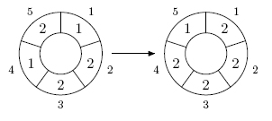
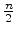
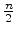

Europe - Northeastern Europe & Russian Republic - 2006/2007
| 3704 - Cellular Automaton Europe - Northeastern Europe & Russian Republic - 2006/2007 | ||||
| Submit | Ranking | ||||
A cellular automaton is a
collection of cells on a grid of specified shape that evolves through a
number of discrete time steps according to a set of rules that describe
the new state of a cell based on the states of neighboring cells. The
order of the cellular automaton is the number of cells it contains.
Cells of the automaton of order n
The order of the cell is the number of different values it may contain. Usually,
values of a cell of order m
One of the most fundamental properties of a cellular automaton
is the type of grid on which it is computed. In this problem we examine
the special kind of cellular automaton -- circular cellular automaton
of order n
A distance between cells i
On each d
The following picture shows 1-step of the 5,3-automaton.
The problem is to calculate the state of the n, m
The input file contains several test cases, each of them consists of two lines,
as described below.
The first line of the input contains four integer numbers n

Input
 n
n 500, 1
500, 1 m
m 1000000, 0
1000000, 0 d < , 1
d < , 1 k
k 10000000)
10000000)
Output
For each test case, write to the output, on a line by itself,
the values of the n, m
Sample Input
5 3 1 1
1 2 2 1 2
5 3 1 10
1 2 2 1 2
Sample Output
2 2 2 2 1
2 0 0 2 2
Northeastern Europe & Russian Republic 2006-2007